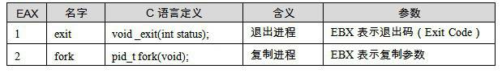
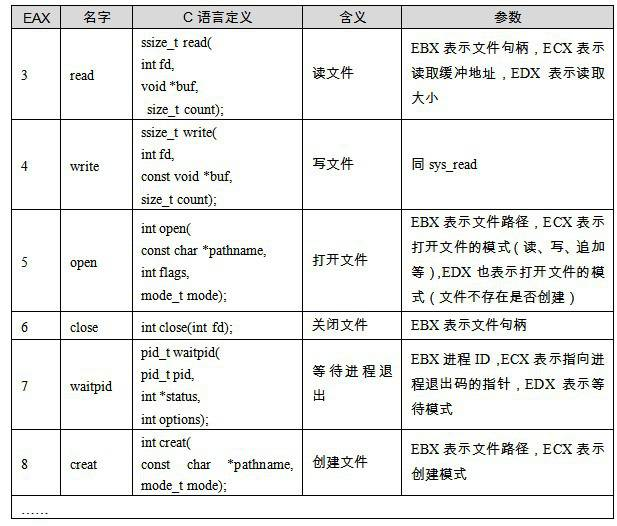

12.1 系統呼叫介紹
12.1.1 什麼是系統呼叫
在現代的作業系統裡，程式執行的時候，本身是沒有權利訪問多少系統資源的。由於系統有限的資源有可能被多個不同的應用程式同時訪問，因此，如果不加以保護，那麼各個應用程式難免產生衝突。所以現代作業系統都將可能產生衝突的系統資源給保護起來，阻止應用程式直接訪問。這些系統資源包括檔案、網路、IO、各種裝置等。舉個例子，無論在Windows下還是Linux下，程式設計師都沒有機會擅自去訪問硬碟的某扇區上面的資料，而必須透過檔案系統；也不能擅自修改任意檔案，所有的這些操作都必須經由作業系統所規定的方式來進行，比如我們使用fopen去開啟一個沒有許可權的檔案就會發生失敗。
此外，有一些行為，應用程式不借助作業系統是無法辦到或不能有效地辦到的。例如，如果我們要讓程式等待一段時間，不借助作業系統的唯一辦法就是使用這樣的程式碼：
int i; for (i = 0; i < 1000000; ++i);
這樣實現等待的確可以勉強達到目的，但是在等待的時候會白白地消耗CPU時間，造成系統資源的浪費，最大的問題是，它將隨著計算機效能的變化而耗費不同的時間，比如在100MHz的CPU中，這段程式碼需要耗費1秒，而在1000MHz的CPU中，可能只需要0.1秒，因此用這段程式碼來實現定時並不是好辦法。使用作業系統提供的定時器將會更加方便並且有效，因為在任何硬體上，程式碼執行的效果是一樣的。
用現代的機器玩某些古老DOS遊戲的時候是否會覺得遊戲進行得太快？
可見，沒有作業系統的幫助，應用程式的執行可謂寸步難行。為了讓應用程式有能力訪問系統資源，也為了讓程式藉助作業系統做一些必須由作業系統支援的行為，每個作業系統都會提供一套介面，以供應用程式使用。這些介面往往透過中斷來實現，比如Linux使用0x80號中斷作為系統呼叫的入口，Windows採用0x2E號中斷作為系統呼叫入口。
系統呼叫涵蓋的功能很廣，有程式執行所必需的支援，例如建立/退出程式和執行緒、程式記憶體管理，也有對系統資源的訪問，例如檔案、網路、程式間通訊、硬體裝置的訪問，也可能有對圖形界面的操作支援，例如Windows下的GUI機制。
系統呼叫既然作為一個介面，而且是非常重要的介面，它的定義將十分重要。因為所有的應用程式都依賴於系統呼叫，那麼，首先系統呼叫必須有明確的定義，即每個呼叫的含義、引數、行為都需要有嚴格而清晰的定義，這樣應用程式（執行庫）才可以正確地使用它；其次它必須保持穩定和向後相容，如果某次系統更新導致系統呼叫介面發生改變，新的系統呼叫介面與之前版本完全不同，這是無法想象的，因為所有之前能正常執行的程式都將無法使用。所以作業系統的系統呼叫往往從一開始定義後就基本不做改變，而僅僅是增加新的呼叫介面，以保持向後相容。
不過對於Windows來講，系統呼叫實際上不是它與應用程式的最終介面，而是API，所以上面這段對系統呼叫的描述同樣適用於Windows API，我們也暫時可以把API與系統呼叫等同起來。事實上Windows系統從Windows 1.0以來到最新的Windows Vista，這數十年間API的數量從最初1.0時的450個增加到了現在的數千個，但是很少對已有的API進行改變。因為API一旦改變，很多應用程式將無法正常執行。
12.1.2 Linux系統呼叫
下面讓我們來看看Linux系統呼叫的定義，已有一個比較直觀的概念。在x86下，系統呼叫由0x80中斷完成，各個通用暫存器用於傳遞引數，EAX暫存器用於表示系統呼叫的介面號，比如EAX = 1表示退出程式（exit）；EAX = 2表示建立程式（fork）；EAX = 3表示讀取檔案或IO（read）；EAX = 4表示寫檔案或IO（write）等，每個系統呼叫都對應於核心原始碼中的一個函式，它們都是以“sys_”開頭的，比如exit呼叫對應核心中的sys_exit函式。當系統呼叫返回時，EAX又作為呼叫結果的返回值。
Linux核心版本2.6.19總共提供了319個系統呼叫，我們將其中一部分列在表12-1中。


我們沒有必要一一列舉這個Linux版本的300多個系統呼叫，未列舉的包括許可權管理（sys_setuid等）、定時器（sys_timer_create）、訊號（sys_sigaction）、網路（sys_epoll）等。這些系統呼叫都可以在程式裡直接使用，它的C語言形式被定義在“/usr/include/unistd.h”中，比如我們完全可以繞過glibc的fopen、fread、fclose開啟讀取和關閉檔案，而直接使用open()、read()和close()來實現檔案的讀取，使用write向螢幕輸出字串（標準輸出的檔案控制代碼為0）：
#include <unistd.h>
int main(int argc, char* argv[])
{
char buffer[64];
char* error_message = "open file error\n";
char* success_message = "open file success\n";
int fd = open("readme.txt", 0, 0);
if(fd == -1) {
write( 0, error_message, strlen(error_message) );
return -1;
}
write( 0, success_message, strlen(success_message) );
// read file
read( fd, buffer, 64 );
close(fd);
return 0;
}
當然也可以舉一反三，可以使用read系統呼叫實現讀取使用者輸入（標準輸入的檔案控制代碼為1）。不過由於繞過了glibc的檔案讀取機制，所以所有位於glibc中的緩衝、按行讀取文字檔案等這些機制都沒有了，讀取的就是檔案的原始資料。當然很多時候我們希望獲得更高的檔案讀寫效能，直接繞過glibc使用系統呼叫也是一個比較好的辦法。
我們也可以使用Linux的man命令察看每個系統呼叫的詳細說明，比如察看read（man引數2表示系統呼叫手冊）：
$ man 2 read
12.1.3 系統呼叫的弊端
系統呼叫完成了應用程式和核心交流的工作，因此理論上只需要系統呼叫就可以完成一些程式，但是：
理論上，理論總是成立的。
事實上，包括Linux，大部分作業系統的系統呼叫都有兩個特點：
使用不便。作業系統提供的系統呼叫介面往往過於原始，程式設計師需要了解很多與作業系統相關的細節。如果沒有進行很好的包裝，使用起來不方便。
各個作業系統之間系統呼叫不相容。首先Windows系統和Linux系統之間的系統呼叫就基本上完全不同，雖然它們的內容很多都一樣，但是定義和實現大不一樣。即使是同係列的作業系統的系統呼叫都不一樣，比如Linux和UNIX就不相同。
為瞭解決這個問題，第1章中的“萬能法則”又可以發揮它的作用了。“解決計算機的問題可以透過增加層來實現”，於是執行庫挺身而出，它作為系統呼叫與程式之間的一個抽象層可以保持著這樣的特點：
使用簡便。因為執行庫本身就是語言級別的，它一般都設計相對比較友好。
形式統一。執行庫有它的標準，叫做標準庫，凡是所有遵循這個標準的執行庫理論上都是相互相容的，不會隨著作業系統或編譯器的變化而變化。
這樣，當我們使用執行庫提供的介面寫程式時，就不會面臨這些問題，至少是可以很大程度上掩蓋直接使用系統呼叫的弊端。
例如C語言裡的fread，用於讀取檔案，在Windows下這個函式的實現可能是呼叫ReadFile這個API，而如果在Linux下，則很可能呼叫了read這個系統呼叫。但不管在哪個平台，我們都可以使用C語言執行庫的fread來讀檔案。
執行時庫將不同的作業系統的系統呼叫包裝為統一固定的介面，使得同樣的程式碼，在不同的作業系統下都可以直接編譯，並產生一致的效果。這就是原始碼級上的可移植性。
但是執行庫也有執行庫的缺陷，比如C語言的執行庫為了保證多個平台之間能夠相互通用，於是它只能取各個平台之間功能的交集。比如Windows和Linux都支援檔案讀寫，那麼執行庫就可以有檔案讀寫的功能；但是Windows原生支援圖形和使用者互動系統，而Linux卻不是原生支援的（透過XWindows），那麼CRT就只能把這部分功能省去。因此，一旦程式用到了那些CRT之外的介面，程式就很難保持各個平台之間的相容性了。